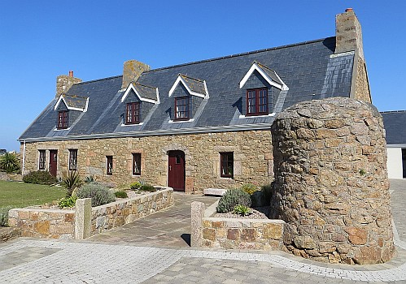
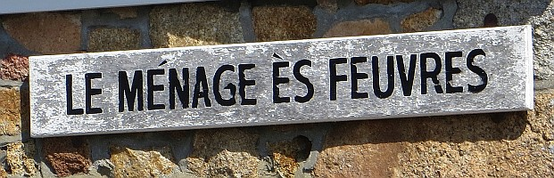

D'èrtou en Jèrri!
Le Ménage ès Feuvres,
St. Ouën.
Lé 27 juilet, 1968.
Moussieu l'Rédacteu,
Eh bein, m'èrvélà en Jèrri! Ouaithe qué v'la tchi s'arrive touos l's êtés, lé r'tou est tréjous iun des pliaisants êvènements d'la vie. Ch'est comme quand nou r'veint siez sé au sé au but d'un long jour dé travas et qu'nou peut s'assiéthe dans la grand' tchaise au pid d'l'âtre et mett' ses chapîns en attendant qu'la bouannefemme dréche la soupe! Et tchi pliaîsi d'èrvaie touos l's anmîns, et d'châtchi d'main auve ieux! Malheutheusement, lus nombre rap'tiche touos l's ans à m'suthe tch'i' s'en vont au r'pos êtèrnel. et l'nombre d'Jèrriais en Jèrri pathaît rap'tichi étout, mais l'nombre d'motos par les c'mîns grandit tout l'temps. Si l'affaithe continnue, nou pouorra marchi en ville pus vite que d'y aller en moto! D'eune mannièthe ou d'l'autre, i' faut heunmer l'air empouaîsonné par l'êcappe du gaz dé pétrole brûlée. Ch'est ravissant qu'nou peut garder ses poumons en êtat d'santé!
V'la tchi m'a fait pliaîsi d'vaie qué l'Connêtabl'ye d'St. Pierre a ieu l'avis et l'couothage dé mett' un sîngne tch'annonce qué la vitesse permînse ès motos est réduite à 20 milles à l'heuthe auprès d'l'églyise dans sa pâraisse. En même temps, j'ai r'mèrtchi qué toutes les fais qué j'passe par-là j'sis l'seul tch'obéis l'sîngne, et j'sis à la vaie dé touos l's aut' motoristes! Si la police avait l'temps d's'en d'menter, ou' pouorrait faithe un tas d'arrêts là! Et ch'est un bouan sîngne dé vaie qu'les Connêtabl'yes d'St. Sauveux et d'St. Cliément s'en vont lînmiter la vitesse dans cèrtaine partie d'lus pâraisses étout. J'sis absolûment du même avis qué l'Chef dé Police Axon quand i' nouos dit qu'la grand' partie d's accidents est deue à la vitesse excessive des motos dans nouos p'tites rues.

Le Ménage ès Feuvres

|
Pour la preunmié fais dans quâsi souoxante ans, Le Ménage ès Feuvres est otchupé par des Feuvres. J'sommes trais fréthes dédans à ch't heu - mes fréthes Fraînque et Percy et mé. Percy fut né à Percé à La Côte et n'avait janmais veu nouot' maîson ancestrale dévant. Fraînque l'avait veue bein des fais. Quand il 'tait mousse et qu'nouot' oncl'ye Charles y d'meuthait, l'Fraînque et tchiques aut' mousses d'scendîdrent l'êtchelle dé d'ssus ses cros au pîngnon eune séthée et la mâtîdrent contre la cheunm'née et la bouchîdrent, la cheunm'née, atout eune poutchie d'êtrain ou tchique aut' affaithe. Lé bouanhomme d'oncl'ye, assis tout près d'la grand' âtre pour sé garder caud, c'menchi à êt' enfuntchi par la fumée. I' dêhalit d'un embront et s'appèrchut qu'la cheunm'née 'tait bouchie! I' s'en allit au pîngnon pour mett' l'êtchelle en pliaiche pour monter à la dêbouchi, mais l'êtchelle n'était pus là - les garçons l'avaient portée dans l'mitan du clios à côté. Lé pouorre bouanhomme fut oblyigi d'aller en emprunter ieune siez san vaîsîn!
L'heunmeur dé l'occâsion est qu'nouot' oncl'ye Charles d'mandit à Fraînque dé tâchi d'dêcouvri tchi mauvais sujet tch'avait bouchi sa cheunm'née. "Garde l's ouïes ouvèrtes à l'êcole," i' lî dît, "Les mousses sont seux d's'en vanter, et tu pouorras m'dithe tch'est qu'ch'est" Mais Fraînque 'tait aussi malîn comme lî. Deux-s'trais jours pus tard, quand m'n oncl'ye lî d'mandit s'il avait ouï l's aut' mousses en pâler, Fraînque lî rêponnit: "Nannîn, m'n oncl'ye, ch'est seux tch'i' n'veulent pon en pâler quand j'sis là, car i' savent bein qué j'sis tan n'veu et il' ont peux d'en pâler endrait mé car i' pensent qué j't'lé r'dîthais!"
I' n'y avait pon grand' sou par les c'mîns dans chu temps là, et les mousses n'étaient pon gêtés et piplottés comme i' sont à ch't heu. J'gangnais deux sou la s'maine pour garder la machinne à pédales à iun d'mes oncl'yes propre. I' fallait la netti touos les sièrs pour qu'ou fûsse propre au matîn. Ma fîngre i' m'donnit quat' sou eune fais, mais i' m'dît tch'i' n'fallait pon l'dithe à pèrsonne. Ch'tait d'peux qué l'monde éthaient pensé tch'il 'tait à m'gâter!
Dans chu temps-là nou pouvait acater eune bouanne pétite poutchie d'chucrîns pour deux sou, ou un sûffliet d'blianc fé. Ou mème un patchet d'cigarettes appelé "Pirates" dé dgiex cigarettes. Ch'tait un patchet couvèrt dé vèrt papi atout l'portrait d'un pirate dessus. Nou les feunmait en cachette, sans doute!
Tchi privilège dé pouver r'vénîn dans lé lieu d'naissance ouaithe qué la grand' partie d'la vie a 'té passée houors pays! Et dé r'marchi les vielles rues ès alentours et dé r'vaie les vièrs fossés qué l's anchêtres ont cèrtainement aîdgi à bâti! Et d'pouver pâler dans la langue dé ches anchêtres-là ès deux-s'trais vièrs anmîns tchi sont acouo sus lus pids d'driéthe! Ichîn, dans l'vièr mènage qué j'connaîssais si bein dans mes p'tits jours, les mémouaithes du temps passé m'font penser qu'septante ans lus sont passés bein vite, et qu'moïse n'en 'tait pon fort hors d'la vaie quand i' dît au Seigneur, dans l'nénantième Psaume: "Mille ans devant Tes yeux sont comme le jour d'hier qui s'est passé!"
George d'La Forge
Viyiz étout:
{kind=link}